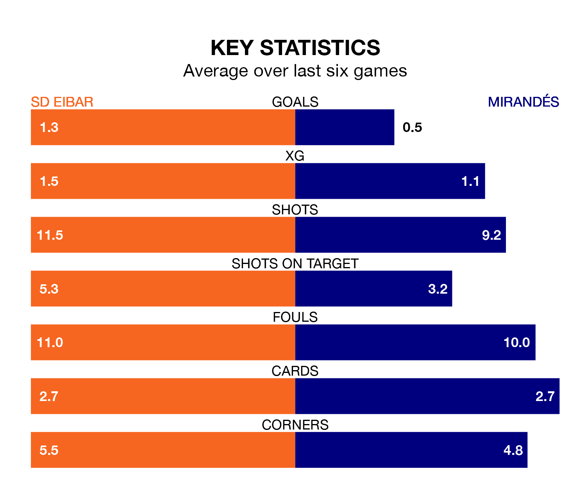

Mirandés face SD Eibar on Friday seeking to protect their formidable unbeaten run in the Segunda División.
Mirandés are unbeaten in eight, with two wins and six draws, ahead of the 7.30pm kick-off.
They face an Eibar team who have won three and drawn two over the same number of games.
With 39 goals in 23 games so far this season, Eibar are the league's highest scorers with 1.7 goals per game. But they are conceding more than average too, letting in 29 goals at a rate of 1.3 per game.
Mirandés are also above average scorers, with 1.3 goals per game, compared to a league average of 1.2. They have also conceded 1.3 goals per game.
In the last 10 years, Eibar and Mirandés have played each other on six occasions. Eibar won three of them and they drew three times.
On average, Eibar scored 2.3 goals and Mirandés 1.3 in those matches.
Their last meeting was on October 5, when Eibar won 3-1 away.
The home team are fourth in the table after 23 games, of which they have won 11 and drawn five, earning 38 points.
The visitors are 10 places behind Eibar in 14th, with seven wins and nine draws putting them on 30 points.
In Carlos Martín, Mirandés have one of the league's most on-form strikers so far this season. He has notched nine goals in 21 appearances, to sit fifth in the scoring charts.
Eibar's top scorer, with nine goals in 21 games, is Juan Diego Molina Martínez.
Eibar's last match was on Sunday, a 3-2 win against SD Huesca, with Juan Berrocal González, Mario Soriano Carreño and Molina Martínez getting the goals for Eibar.
Mirandés drew 1-1 with Levante UD last time out, also on Sunday, with Martín Domínguez on the scoresheet.
Updated: 09:07 (UTC), 24/01/24